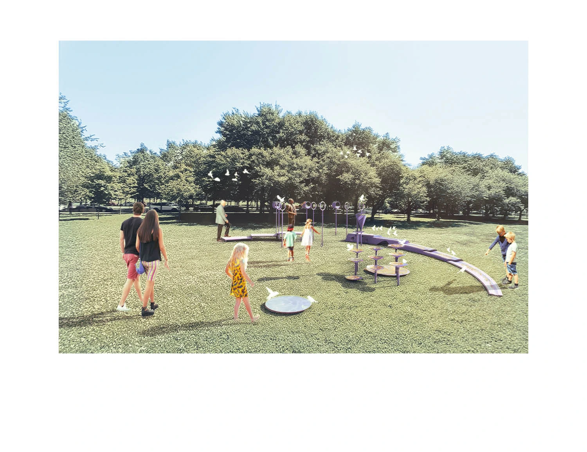
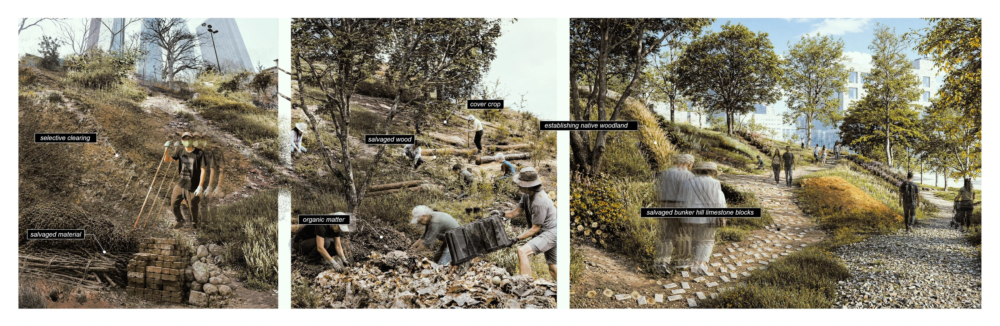
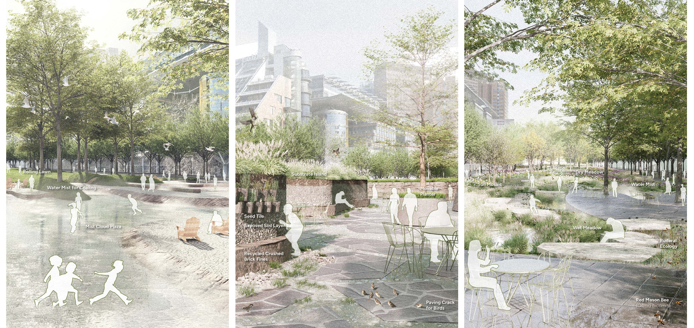

Jiewen Hu
Landscape Architecture
01 / 07
About
Jiewen Hu is a landscape designer based in Philadelphia. Her work explores how landscapes hold memory and how ecological repair can support communities.
She practices at OLIN and holds a Master of Landscape Architecture from the University of Pennsylvania.
Press
View all press-
BLT Built Design Awards
-
Federation of German Landscape Architects (bdla)
-
BauNetz CAMPUS
-
wettbewerbe aktuell
-
Secret Los Angeles
-
Stuart Weitzman School of Design
-
Traded
-
Urbanize LA
-
ASLA LAND
-
World Landscape Architecture